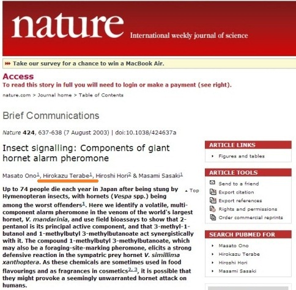

スズメバチハンターは私です♪
・代表者名 ：寺部 宏一（てらべ ひろかず）
・所在地 ：三重県津市
・電話 ：090-8781-8350
・メール ：info@8hiro.com
・生年月日 ：1980年6月24日
経歴・職歴
２００３年３月 玉川大学農学部農学科昆虫学研究室卒業
大学の卒業研究論文のテーマ
『社会性ハチ類の警報フェロモンに関する研究』―オオスズメバチの警報フェロモンの構造決定を中心に―
Studies on the alarm pheromones of social wasps and bees
―with special reference to the identification of chemical structure of the alarm pheromone of the giant hornet,
Vespa mandarinia japonica (Hymenoptera: Vespidae)―
小野教授や先輩をはじめ、多くの方々にサポートしていただき、２００３年にオオスズメバチの警報フェロモンを発見することが出来ました。
日本応用昆虫学会にて『日本産スズメバチ属の警報フェロモンに関する研究』をテーマに発表
日本応用動物昆虫学会大会講演要旨（日本産スズメバチ属の警報フェロモンに関する研究）
同年、当時お世話になっていた小野教授により科学雑誌『Nature』（ネイチャー）に登載されました。
科学雑誌Nature（ネイチャー） （Vol. 424, No.6949, pp. 637-638, 7 August）
その後...
２００３年３月 福島県会津へ Iターンをし、有機農業の研修を受ける
２００４年４月 独立して有機農業を開始
会津地域にて蜂の巣の駆除を開始
農業だけでは生活が成り立たないので、以下の仕事も経験
・農家のアルバイト（アスパラガス農家、米農家、有機栽培農家など）
・土木業 （現場作業員）
・印刷業 （印刷機オペレーター）
・事務 （福島県職員臨時事務）
・インターネットビジネス（アフィリエイト、アドセンス、オークション等）
２０１２年８月 三重県へ移住
・有機栽培農業法人 （農場の現場作業員）
・林業 （原木の皮むき機械オペレーター）
・製材業 （現場作業員）
・ホテル業 （ホテルの清掃員）
三重県エリアにて、ハチの巣の捕獲業務を再開
２０１５年７月 インターネット通販会社へ就職
２０２６年１月 解体・産廃会社へ転職

科学雑誌『nature』（ネイチャー）好きなコトなど
基本的にはパソコンでほぼどんな事でも出来ます！
仕事で使用していたこともあり、文章作成、表計算、プレゼンテーション、音楽、グラフィック、動画、ホームページ、ブログなどなど。
とりあえず何でも出来ます。分らないことがあっても、くじけずに徹底的に調べて解決です！！
【使用可能ツール／言語】
OS：Windows
Office：Word、Excel、PowerPoint
クリエイティブ：Photoshop、Illustrator、Dreamweaver、Premiere Pro、XD、Visual Studio Code
言語・CMS：HTML、CSS、JavaScript、Bootstrap、WordPress
経験業務
・Word、Excel、PowerPointでの資料制作（10年以上）
・Photoshopによるバナー制作（約5年）
・Premiere Proによる動画編集（約4年）
・Illustratorによるチラシデザイン（約2年）
・BootstrapでのレスポンシブWeb構築（約3年）
・VS Codeを用いたWeb制作（レスポンシブ対応：約3年）
・jQuery／JavaScript実装（約3年）
・WordPress構築・記事作成（約2年）
・ランディングページ制作／イベントページ用画像作成
・商品ページPRバナー制作／商品紹介コンテンツ制作
・製品写真の撮影・加工／プロモーション動画撮影・編集
・EC店舗の新規出店・構築・運営・販促・広告運用・店舗分析
・対応モール：楽天、Yahoo!ショッピング、Amazon、au PAY マーケット、Qoo10、ギフトモール、COLOR MEショップ、Make Shop
・社内PC管理（OSインストール、セットアップ、修理・カスタマイズ含む）
ホームページ制作実績
数社にてホームページ制作実績
※このホームページも私が制作しています。
-
生け捕り捕獲など

-
種類や生活史・巣の場所等

-
被害者や対策・対応等

-
すずめばちやについて